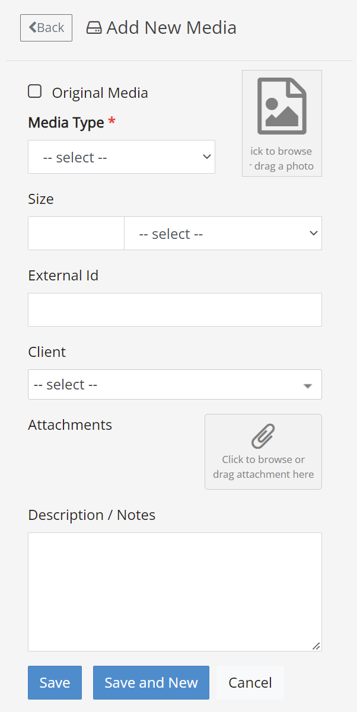
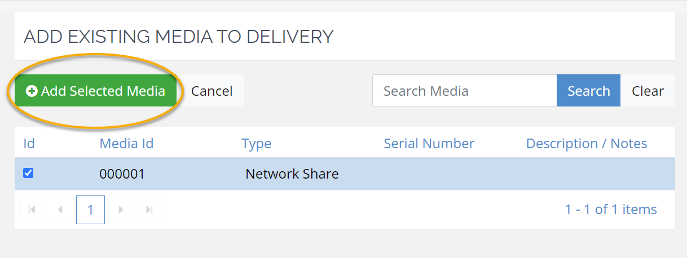

On the Deliveries tab, double-click the delivery to which media is being added.
On the Delivery summary page, click Add New Media.


After a delivery is created, the media associated with
the delivery can be defined and added to the delivery to which it belongs.
Media can also be defined separately from
deliveries, with the option to add them to a delivery later if needed. For more information, see
There are two options for adding media to your delivery. You can create new media that will be added directly to your delivery, or choose from existing media to add to your delivery.
In Media Manger, you can create new media from the Deliveries tab or the Media tab.
To create media that will be added to a delivery, use the Deliveries tab:
On the Deliveries tab, double-click the delivery to which media is being added.
On the Delivery summary page, click Add New Media.

After a delivery has been created, complete the following steps to add existing media to the delivery:
Locate and double-click the delivery to which media is being added.
In the Current Media in Delivery area, click Add Existing Media:

In the media list, locate and click to select all media to be added to the delivery.
Click Add Selected Media.

If this is for an outgoing delivery, the data can now be
shipped to clients, opposing counsel, etc. If this is for an incoming delivery, continue with
Related Topics